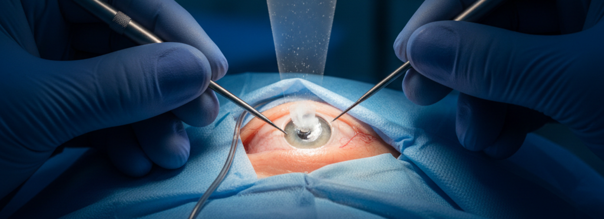

Факоэмульсификация катаракты
Золотой стандарт современной офтальмохирургии. Метод заключается в фрагментации помутневшего хрусталика с помощью ультразвуковых колебаний высокой частоты через микроразрез. После удаления поврежденных масс проводится имплантация интраокулярной линзы, полностью восстанавливающей зрение.
Процедура занимает от 5 до 10 минут, проводится под местной капельной анестезией и не требует наложения швов, что гарантирует быстрое восстановление пациента.
Что такое факоэмульсификация
Принцип операции:
- Через микроскопический прокол 2-3 мм вводится фако-игла.
- Игла генерирует высокочастотные колебания, разрушая хрусталик на мелкие части.
- Раздробленные массы удаляются аспирационной системой через тот же микроразрез.
- В освободившееся место имплантируется искусственная линза, фиксируемая в капсульном мешке.
Операция длится 10-20 минут под местной анестезией без наркоза.
Почему фако - современный стандарт
Фако сочетает ключевые преимущества:
- Малоинвазивность: прокол 2-3 мм, не нужно зашивать, рана закрывается быстро.
- Без боли: местная анестезия, пациент не чувствует дискомфорта.
- Быстрое восстановление: зрение улучшается в течение 6-24 часов.
- Высокая точность: оптическая биометрия и 3D-картирование помогают точно позиционировать ИОЛ.
- Низкий риск осложнений: минимальное повреждение тканей снижает воспаление и отек.
- Универсальность: метод подходит для всех стадий катаракты, включая плотную и сложную.
Эти факты подтверждены клиническими протоколами Минздрава России и международных ассоциаций офтальмологов.
Этапы операции
Предоперационная подготовка
- Малоинвазивность: прокол 2-3 мм, не нужно зашивать, рана закрывается быстро.
- Без боли: местная анестезия, пациент не чувствует дискомфорта.
- Быстрое восстановление: зрение улучшается в течение 6-24 часов.
- Высокая точность: оптическая биометрия и 3D-картирование помогают точно позиционировать ИОЛ.
- Низкий риск осложнений: минимальное повреждение тканей снижает воспаление и отек.
- Универсальность: метод подходит для всех стадий катаракты, включая плотную и сложную.
Эти факты подтверждены клиническими протоколами Минздрава России и международных ассоциаций офтальмологов.